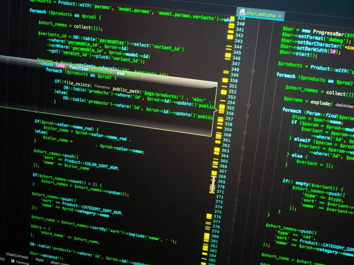

Javascript är en av webbens tre grundläggande byggstenar tillsammans med HTML och CSS. Om HTML utgör strukturen och CSS designen, kan man säga att Javascript utgör funktionaliteten på internets webbsidor. Numera kan enkla animationer åstadkommas med hjälp av CSS, men generellt är det Javascript som möjliggör allt som "händer" på en webbsida. Exempel på saker som händer kan vara att någonting ändras när man klickar på en knapp, att ett formulär visar att jag har fyllt i mitt personnummer i fel format, eller att någonting rör på sig eller ändras på hemsidan. En vanlig missuppfattning är att Java och Javascript är samma sak, vilket inte stämmer. Båda är programmeringsspråk, men de är relativt väsensskilda vad gäller hur de används.
Mjukvara
Mjukvara finns överalt idag! Mjukvara är i huvudsak en sorts programvara, bestående av en uppsättning program, som möjliggör det för användarna att utföra specifika uppgifter på sina enheter. Det vill säga att det finns en mjukvara inne i din dator, mobiltelefon, surfplatta och så vidare. Här har du det tre mest populära programmerings språken idag.
HTML står för HyperText Markup Language och är en av webbens grundläggande byggstenar tillsammans med CSS (Cascading Style Sheets) och Javascript. (Vad CSS och Javascript är kommer att besvaras i kommande blogginlägg.) HTML utgör strukturen för alla internets webbsidor i form av rubriker, styckeindelning, att särskilja visst innehåll från annat och liknande. Det går också att infoga bilder med HTML. CSS står för Cascading Style Sheets och är en av webbens tre grundläggande byggstenar tillsammans med HTML och Javascript. Man kan säga att CSS är webbens ansikte utåt, och sköter alltså allt som har med design att göra. Med hjälp av CSS kan man åstadkomma allt från att välja typsnitt på text till att göra snygga animationer.

SQL (Structured Query Language) är ett datorspråk som används till att arbeta med faktauppsättningar och relationerna mellan dem. Relationsbaserade databasprogram, som Microsoft Office Access, använder SQL till att bearbeta data. Till skillnad från många andra datorspråk är det inte svårt att läsa och förstå SQL, även för nybörjare. Precis som många datorspråk är SQL en internationell standard som erkänns av standardorgan som ISO och ANSI. Du kan använda SQL till att beskriva datauppsättningar som kan hjälpa dig att svara på frågor. När du använder SQL måste du använda rätt syntax. Syntaxen är den uppsättning regler som språkelementen kan kombineras med. SQL-syntaxen är baserad på den engelska syntaxen och många element är samma som i syntaxen för Visual Basic for Applications (VBA).
Andra programmeringsspråk
| Språk | Tillkomstdatum | användningsområde |
|---|---|---|
| C# | 2000. | främst till utveckling av spel och Windowsbaserade program. |
| C++ | 1983. | används mest i programmering av system, program och spel. |
| Ruby | 1993 | används till både korta skript samt utveckling av större applikationer. |
| Java | 1991 | globala standarden för utveckling och leverans av inbäddade applikationer, mobilapplikationer, spel, webbaserat innehåll och programvara för företag. |
| Scala | 2003 | används för funktionell programmering och starka statiska system. Den är objektorienterad och den körs på JVM |